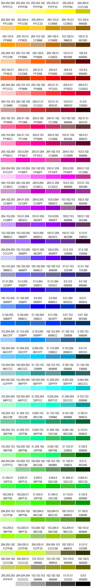

При задании цвета в шестнадцатеричном формате посредством устаревшего тега HTML распознает комбинацию цифр от 0 до 9 и букв A, B, C, D, E, F. При этом, если в записи присутствуют иные символы, в процессе интерпретации цвета они заменяются на 0.
Первые две цифры определяют красную составляющую цвета, цифры с третьей по четвертую — зеленую, а последние две цифры— синюю
Цвет #BruceWillis будет соответствовать цвету #B00CE0000000, а цвет #candy — #CA0D00.
Безопасная палитра-это палитра, состоящая из 216 оттенков, которые отображаются максимально точно независимо от монитора компьютера или выбранного браузера, способного отображать, по крайней мере, 8-ми битный цвет (256 цветов).Когда компьютер не способен отобразить какой-либо цвет, он пытается имитировать его с помощью смешения (dithering). Т.е. он смешивает доступные ему цвета в нужной пропорции. Однако результат будет далек от идеального, и при близком рассмотрении такая картинка выглядит зернистой. Если вы используете только цвета из безопасной палитры, то они не будут подвергнуты смешению, и вы можете быть уверены, что сделанная вами страница, на чужом мониторе будет смотреться, как на вашем.
Для обозначения цветов безопасной палитры используются 00, 33, 66, 99, CC,. FF - для шестнадцатеричного обозначения в html и 0, 51, 102, 153, 204, 255 - для графических редакторов. Правда, некоторые графические редакторы для указания цвета используют проценты. В этом случае ряд значений выглядит как 0%, 20%, 40%, 60%, 80%, 100%. При обозначении цветов в html-документах вначале ставят знак номера #.
Красный будет обозначаться как 255, 0, 0 в Photoshop-e и #FF0000 в html.Цвета расположены в соответствии с каталогом Pantone Colorweb. Над каждым цветом даны два значения RGB - DEC (для создания цвета в графическом редакторе) и HEX (для обозначения цвета в HTML)

Сегодня уже весьма спорна целесообразность использования безопасной палитры, однако используя её, вы будете уверены, что цвета будут выглядеть неизменно хорошо и без искажений даже на очень старых компьютерах, вплоть до 8-битного режима отображения с поддержкой всего 256 цветов.